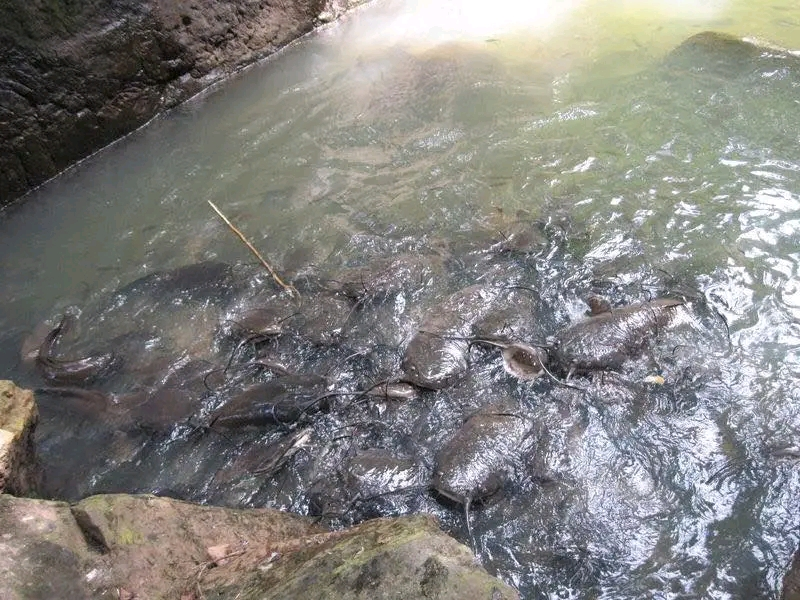
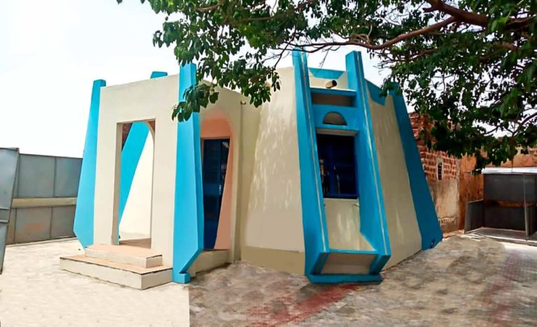
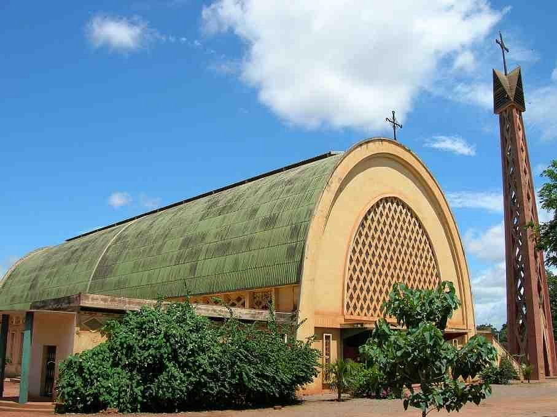
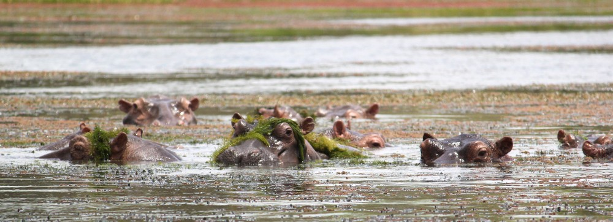
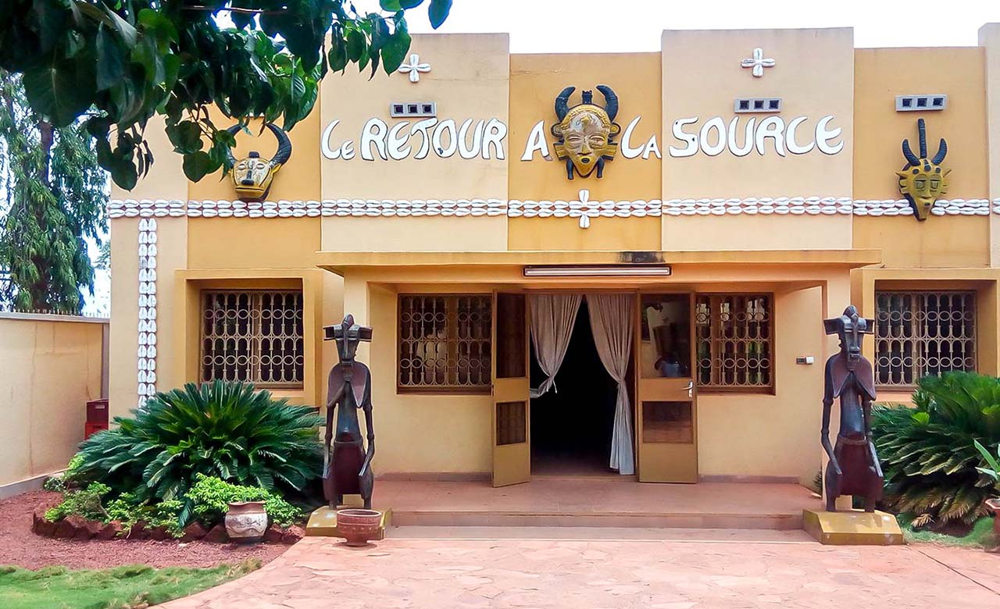
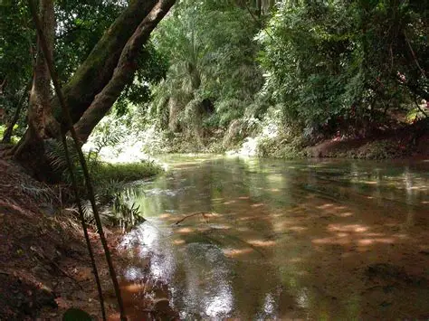

La belle cité de SYA abrite un patrimoine exceptionnel qui témoigne de son histoire riche et variée. ALORS PLONGEZ DANS CE MONDE HISTORIQUE ! en y faisant un tour

Une mosquée ancienne et belle, symbole de la richesse culturelle de la ville.
Decouvrir →
Des sillures sacrées et mystérieuses, témoins de la richesse spirituelle de la ville.
Decouvrir →
La l'histoire prend forme dans ce lieu emblématique de la ville.
Decouvrir →
Un site naturel magnifique, témoignage de la beauté du paysage local.
Decouvrir →
Un site religieux emblématique, témoignage de l'architecture et de la foi dans la ville.
Decouvrir →
un site naturel calm ou la vie s'ecoule simplement,un lieu de paix et de tranquillité.
Decouvrir →
Un centre culturel dynamique, témoignage de la richesse artistique et culturelle de la ville.
Decouvrir →
Un musée fascinant, témoignage de l'histoire et de la culture de la ville.
Decouvrir →
Un village traditionnel, témoignage de la vie rurale et de la culture locale.
Decouvrir →
Une flore riche et variée, témoignage de la biodiversité du territoire.
Decouvrir →